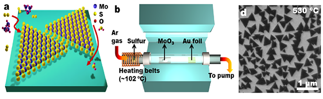

研究方向
研究方向一
随着人类经济社会的快速发展，环境问题日益严重，其中80%以上是由化学物质污染造成的。污染控制化学主要研究与污染控制和修复有关的化学机制与工艺技术中的化学问题，为开发经济、高效的污染控制及修复技术，发展清洁生产工艺提供理论依据。本课题组致力于发展基于环境友好的铁和分子氧的高效低成本绿色污染控制技术，着重解决纳米零价铁的反应活性调控和分子氧活化面临的关键科学问题，发现纳米零价铁核壳结构依赖分子氧活化降解有机污染物特性，提出了一个纳米零价铁活化分子氧新机理来解释这一特性（如下图）；并不断寻找和设计能提高纳米零价铁反应活性的配体，诠释纳米零价铁界面反应和活性氧物种产生规律。
铁是地壳中元素丰度排第四的过渡金属元素，广泛存在于大气气溶胶、天然水体、土壤和动植物体内，其普遍存在及氧化还原特性使其在自然界生物地球化学循环和生物体的化学演变过程中扮演着重要角色。铁循环在地球化学循环中居于位置重要、功能多样的枢纽地位，研究铁循环及其环境效应已然成为国际研究前沿和热点话题，更是揭开红壤非生物地球化学循环奥秘的关键点。解决铁循环问题的关键是在原子水平上阐明（氢）氧化铁表/界面上发生的吸/脱附原理、氧化还原过程以及电子转移途径，并进一步揭示其环境效应。最近，本课题组开始可控合成出不同晶面暴露的赤铁矿纳米晶，利用扩展X射线吸收精细结构光谱、衰减全反射傅里叶红外光谱等现代表征技术，并结合密度泛函理论计算手段，系统地研究典型环境污染物在赤铁矿不同晶面上吸附/脱附和氧化还原以及电子转移过程（如下图），阐明赤铁矿晶面依赖的环境污染物吸附和转化特性，籍此在原子水平上揭示赤铁矿的环境效应，理解红壤中复杂的地球化学循环过程，阐明红壤中铁循环与污染物迁移转化之间的内在联系，并通过铁循环调控实现环境治理和修复。
研究方向二
随着人类经济社会的快速发展，环境问题日益严重，其中80%以上是由化学物质污染造成的。污染控制化学主要研究与污染控制和修复有关的化学机制与工艺技术中的化学问题，为开发经济、高效的污染控制及修复技术，发展清洁生产工艺提供理论依据。本课题组致力于发展基于环境友好的铁和分子氧的高效低成本绿色污染控制技术，着重解决纳米零价铁的反应活性调控和分子氧活化面临的关键科学问题，发现纳米零价铁核壳结构依赖分子氧活化降解有机污染物特性，提出了一个纳米零价铁活化分子氧新机理来解释这一特性（如下图）；并不断寻找和设计能提高纳米零价铁反应活性的配体，诠释纳米零价铁界面反应和活性氧物种产生规律。
铁是地壳中元素丰度排第四的过渡金属元素，广泛存在于大气气溶胶、天然水体、土壤和动植物体内，其普遍存在及氧化还原特性使其在自然界生物地球化学循环和生物体的化学演变过程中扮演着重要角色。铁循环在地球化学循环中居于位置重要、功能多样的枢纽地位，研究铁循环及其环境效应已然成为国际研究前沿和热点话题，更是揭开红壤非生物地球化学循环奥秘的关键点。解决铁循环问题的关键是在原子水平上阐明（氢）氧化铁表/界面上发生的吸/脱附原理、氧化还原过程以及电子转移途径，并进一步揭示其环境效应。最近，本课题组开始可控合成出不同晶面暴露的赤铁矿纳米晶，利用扩展X射线吸收精细结构光谱、衰减全反射傅里叶红外光谱等现代表征技术，并结合密度泛函理论计算手段，系统地研究典型环境污染物在赤铁矿不同晶面上吸附/脱附和氧化还原以及电子转移过程（如下图），阐明赤铁矿晶面依赖的环境污染物吸附和转化特性，籍此在原子水平上揭示赤铁矿的环境效应，理解红壤中复杂的地球化学循环过程，阐明红壤中铁循环与污染物迁移转化之间的内在联系，并通过铁循环调控实现环境治理和修复。